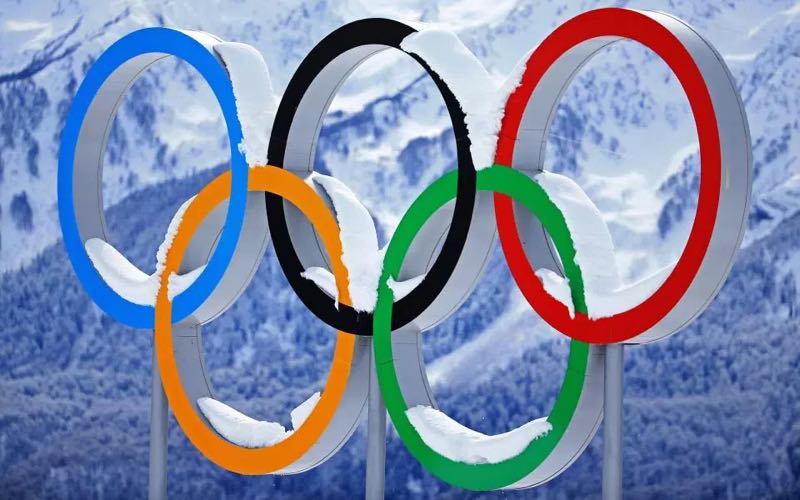

O que são as olímpiadas de inverno? Quais são as modalidades jogadas nas Olímpiadas de inverno?
Os Jogos Olímpicos de Inverno foram criados como um recurso aos esportes de neve e gelo que foram logisticamente
impossibilitados de serem realizados durante os Jogos Olímpicos. Patinação artística (em 1908 e 1920) e hóquei no gelo (em 1920) foram apresentados como eventos
olímpicos nos Jogos de Inverno. O COI então quis ampliar essa lista de esportes para abranger outras atividades do inverno. Em 1921, no Congresso Olímpico do COI,
em Lausana, foi decidido realizar uma versão de inverno dos Jogos Olímpicos. Uma semana de esportes de inverno (na verdade foram 11 dias) foi realizada em 1924,
em Chamonix, França, este evento tornou-se a primeira edição dos Jogos Olímpicos de Inverno. O COI determinou que os Jogos de Inverno fossem comemorados a
cada quatro anos no mesmo ano de sua edição de verão. Esta tradição foi mantida até os Jogos de 1992 em Albertville, França, mas por questões logísticas e
de organização houve a necessidade de se alterar o ciclo dos Jogos de Inverno, levando-os para anos pares alternados com os Jogos Olímpicos de Verão: o novo
sistema começou com os Jogos de 1994, e desde então os Jogos Olímpicos de Inverno sempre são realizados no terceiro ano de cada Olimpíada.

Biatlo
O Biathlon de Inverno é a combinação do Ski Cross Country com o Tiro Esportivo. Neste esporte, o atleta atira em alvos a 50m de distância em duas posições:
deitado e em pé. Para cada tiro errado, o competidor é penalizado com voltas adicionais de esqui ou adição de tempo no seu resultado final.
Bobsleigh
O bobsled é um esporte desenvolvido para prática de inverno e tem como objetivo principal, percorrer uma pista de gelo inclinada de aproximadamente 1500m
no menor tempo possível. A atividade é iniciada com o trenó parado, sem movimento.
Combinado Nórdico
Combinado nórdico (em sueco: Nordisk kombination) é uma disciplina de esporte de inverno disputada apenas por homens e constituída por salto de esqui e esqui
cross-country (7,5 ou 15 km). O domínio norueguês da modalidade, notável nas primeiras décadas do esporte, vem perdendo força nos últimos anos.
Curling
Curling é um esporte realizado em pistas de gelo e formado por equipes de duas ou quatro pessoas, que têm como objetivo lançar pedras o mais próximo possível
do alvo. As equipes são formadas pelos lançadores e pelos varredores. O Canadá é a principal potência mundial do esporte.
Esqui Alpino
O esqui alpino é um desporto de inverno que é praticado numa pista de esqui . A nível de competição, o esqui alpino consiste em percorrer um percurso
descendente em velocidade, com passagens obrigatórias e entre estacas plantadas na neve chamadas "portas". O objetivo é completar o percurso no menor tempo possível.
Esqui Cross-country
O Esqui Cross Country é um esporte de resistência, no qual os atletas percorrem variadas distâncias com esquis e impulsionados por bastões, em duas diferentes
técnicas: a Clássica e a Skating. Na primeira, os atletas percorrem trilhos previamente preparados, com os skis pararelos entre si.
Esqui Estilo Livre
Esqui estilo livre é uma modalidade de esqui caracterizada pela existência de saltos acrobáticos e descidas de montanha em velocidade. Originada do esqui
alpino, começou a se organizar na década de 1960, entrando oficialmente para o programa dos Jogos Olímpicos de Inverno em 1992. O Aerials é baseado apenas nos saltos.
Hóquei no Gelo
O hóquei no gelo é um esporte de equipe muito veloz. Ele é jogado sobre uma superfície de gelo chamada pista, ou rinque. Os atletas calçam patins que lhes
permitem deslizar habilmente. Dois times de seis jogadores usam tacos para tentar controlar um disco pequeno de borracha e marcar o maior número de pontos, ou gols.
Luge
No luge, os competidores largam sentados sobre o trenó, impulsionando-o com os braços. Para isso, os atletas usam luvas especiais com agulhas para ajudar
no atrito com o gelo. Depois, o competidor deita no trenó e passa a guiá-lo com a combinação dos movimentos das pernas e do tronco.
Patinação Artística
A Patinação Artística, especificamente, surgiu de uma brincadeira em que os patinadores faziam desenhos no gelo com suas lâminas enquanto patinavam, e
foi assim que começaram a realizar concursos para ver quem fazia os desenhos mais bonitos e complexos.
Patinação de Velocidade
Patinação de velocidade é uma forma competitiva de patinação no gelo em que os concorrentes competir entre si em viajar de uma certa distância em patins.
Tipos de patinação de velocidade em pista longa são patinação de velocidade, patinação de velocidade em pista curta, patinação de velocidade e maratona.
Patinação de Velocidade em Pista Curta
A patinação de velocidade em pista curta é uma das três disciplinas de patinação nos Jogos de Inverno, ao lado da patinação artística e da patinação de
velocidade. Mas ao contrário da patinação de velocidade, na pista curta os competidores correm um contra o outro - não contra o relógio.
Salto de Esqui
Salto de esqui é um esporte olímpico de inverno criado na Noruega no início do século XIX. Espalhou-se pela Europa e pela América do Norte no início do século XX
através, principalmente, de Sondre Norheim, pioneiro do esqui moderno. ... Cada salto é avaliado de acordo com a distância percorrida e o estilo executado.
Skeleton
O Skeleton é considerado um dos esportes mais radicais dos Jogos Olímpicos de Inverno e é disputado individualmente. Nas competições, o atleta se lança em um
trenó e desce de cabeça (literalmente!) a pista. Ele faz de duas a quatro descidas e vence quem tiver o menor tempo no total.
Snowbord
Snowboard é um esporte radical, praticado na neve. Sobre uma prancha, o participante desliza na neve fazendo manobras. Para praticar o snowboard, são
necessários três equipamentos básicos: as botas, os bindings e a prancha. Em 1966, Sherman Popper juntou dois esquis para sua filha brincar.